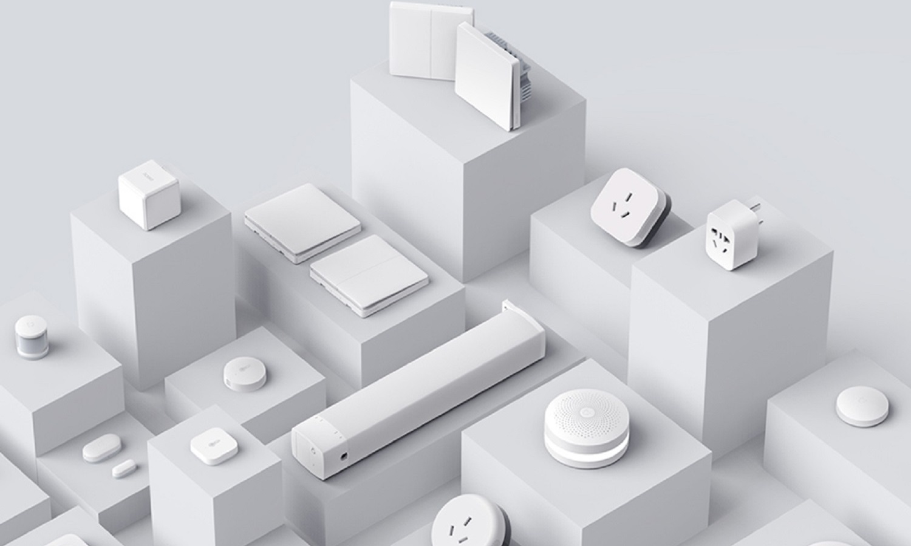
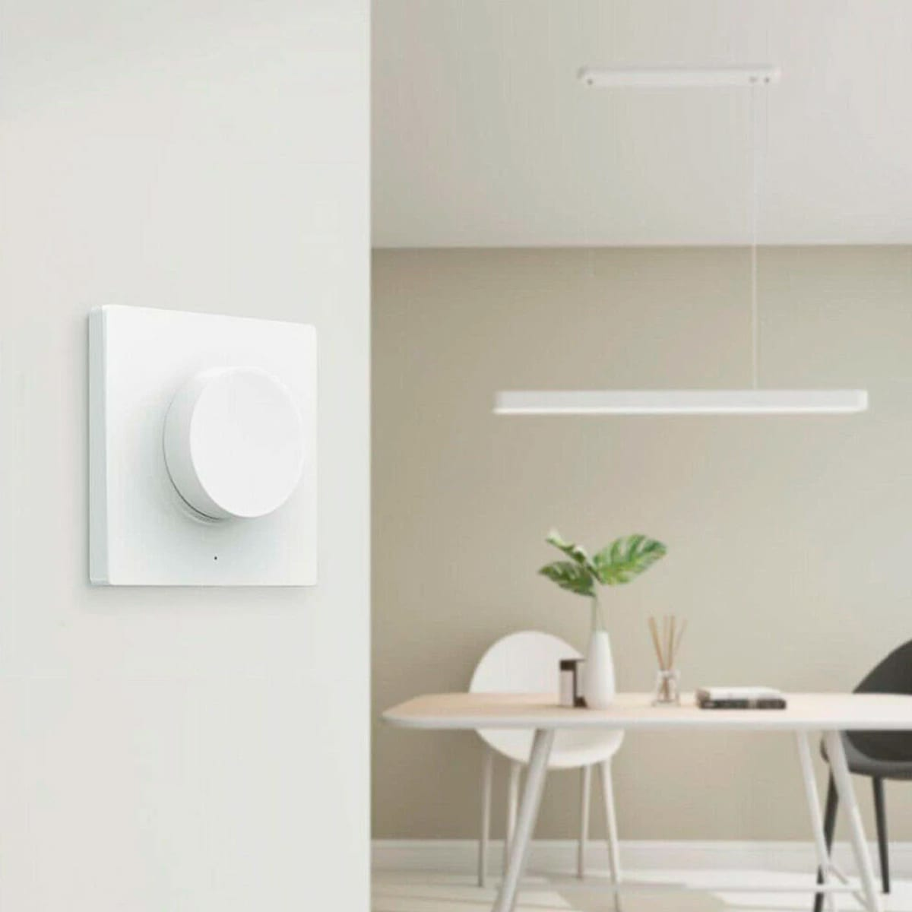

«Умный дом» Xiaomi – это функциональная и высокотехнологичная система, которая объединяет все домашние коммуникации в единую сеть под управлением искусственного интеллекта. на имеет модульную структуру, благодаря чему характеризуется высокой гибкостью настроек и возможностью подбора нужных элементов в соответствии с потребностями и пожеланиями хозяина.
Связь между отдельными элементами, входящими в Smart Home Xiaomi, может осуществляться тремя способами:
•
По протоколу ZigBee. Прибор функционирует от батарейки и для интеграции в единую сеть требуется шлюз управления;
•
Через технологию Bluetooth.
•
По протоколу Wi-Fi. Организована беспроводная передача сигнала, а питание аппаратов организовано от электросети.
Вне зависимости от способа передачи данных, основой системы является хаб (Xiaomi Multifunctional Gateway), который объединяет все модули и именно через него проходят все пользовательские команды. В состав наиболее простого комплекта также входят датчики открытия/закрытия дверей и окон, движения, универсальная кнопка.
У компании большое количество датчиков и других гаджетов, которые работают в едином приложении, а также умеют взаимодействовать с «умными» домами других производителей.

Вариантов использования различных приборов, важных для конкретного владельца, много. Их можно использовать по отдельности, например, лампочки и светильники, а можно включать в общедомовую систему и прописывать сценарии, ориентируясь на личные потребности.
Преимущества:
•
Качественная сборка – все схемы собраны аккуратно и надежно, для корпусов используют отличный пластик;
•
Миниатюрные габариты – большинство приборов и устройств иметь весьма скромные размеры;
•
Простота настройки – для добавления многих девайсов бренда достаточно зайти в приложение Mi Home и нажать кнопку с одноименным названием;
•
Возможность использовать приборы по отдельности – например, хаб может быть светильником, использоваться в качестве радио или колонки, проигрывая композиции, добавленные со смартфона владельца;
•
Удобство создания сценариев – для чего не нужно знать азы программирования, можно использовать заготовки, предлагаемые производителем;
Легкость монтажа – для установки подавляющего большинства устройств в комплекте идет двусторонний скотч, а умные розетки и шлюз просто включаются в обычную розетку;
•
Сохранение функциональности без интернета – часть приборов, работающих по протоколу Zigbee, работают от батареек и способны обмениваться сигналами между собой;
•
Большой выбор умных устройств.
•
Плюсом можно считать лаконичный и стильный дизайн всех устройств, выполненных в белом цвете.
Недостатки:
•
Нужно покупать батарейки – большинство беспроводных девайсов работает от батареек, а это дополнительный расход на покупку новых раз в 1-2 года;
•
Ненадежность крепления – многие потенциальные покупатели с недоверием относятся к двусторонней липкой ленте, считая, что такой прибор злоумышленник очень легко оторвет;
•
Потребность в покупке переходников – у многих девайсов китайская вилка, для включения которой в стандартные розетки в наших домах нужен переходник;
•
Отсутствие русскоязычной версии – приложения для ряда приборов доступны лишь на китайском языке, некоторые переведены на английский;
•
Задержка в реагировании – система использует китайский облачный сервер, поэтому пользователи замечают периодические задержки в реагировании, также девайсы могут отваливаться и их приходится заново подключать.
Последнюю проблему многие активные «строители умного дома» решают за счет использования альтернативных систем управления — Home Assistant, Domoticz, MajorDoMo и других платформ.
 Платформы для реализации умного дома: ◊ Google ◊ Apple ◊ REDMOND ◊ Samsung ◊ Yandex ◊ Ростелеком ◊ Rubetek ⚙ На главную ◄ Amazon